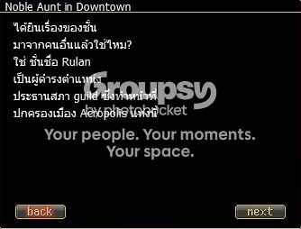

-คนหน้าตาดี- เขียน:เควสดักแก่ บัตรเข้าเมืองปลอมเงื่อนไข : ผ่านการทำเควสมาแล้วอย่างน้อย 1 ครั้ง และไม่ได้สังกัดทหารทิศใดๆเลย
เริ่มแรกให้ไปคุยกับ Wise Man ที่ตำแหน่งดังรูปเลย

ถ้ามันคุยกับเราว่า
อ้า๐ ๐ ๐พึ่งมาที่เมืองนี้เป็นครั้งแรกเหรอ?
เอ๊?ทำไมรู้หล่ะ?
ฮะ ฮะ ฮะ ฮ่า
ก็ดูตื่นเต้น มองนู่นมองนี้ขนาดนั้นหนิ
เป็นใครๆก็รู้
แปลว่าผ่านเงื่อนไขล่ะ
*เมื่อคุยอีกครั้งเราก็จะสามารถถามรายละเอียดการเข้าเมืองได้

ก็คุยไปเรื่อยๆจนจบ แล้ววิ่งมาคุยกับ Noble Aunt in Downtown

คุยกับป้าแกเรื่องๆนั้นล่ะ เราก็จะได้ Acropolis Pass กับ Copper Medal มาด้วย
*สังเกตุดีๆ ป้าแกไม่ธรรมดา

เมื่อคุยเสร็จแล้วให้ไปตามรูปเลย
จะไม่มีวาร์ปให้เห็นแต่จะเห็นจุดวาร์ปในแผนที่
เดินเข้าไปได้เลย
แล้วก็จะพบกับตาลุงในนั้นซึ่งขายไอเท็มดังนี้

และเมื่อเลือก

ลุงแกก็จะทำเนียนไม่รู้ไม่ชี้

ให้เรากลับมาคุยกับ Wise Man อีกครั้ง เค้าจะบอกกับเราว่าให้เอา Curry ไปให้ตาลุงแกสิ
คลิกที่นี่เพื่อดูวิธีทำ Curryทำมาอันนึงแล้วเข้าไปคุยกับตาลุง Shop's Uncle ใหม่
แล้วเราจะให้ Curry ลุงแกไปแล้วลุงแกจะให้บัตรผ่านเข้าเมืองปลอม
 ส่วนที่ผมไม่สามารถทำต่อได้ (ไม่รู้โดนตัดออกหรือปล่าว)
ส่วนที่ผมไม่สามารถทำต่อได้ (ไม่รู้โดนตัดออกหรือปล่าว)....
ถึงส่วนนี้เนื่องจากในสมัยก่อน ถ้าคุยกับลุงแกเรื่อง Delicious Curry แล้ว
ลุงแกจะไม่ขายของให้เรา ให้เราไปคุยกับ Wise Man
แล้วเค้าจะบอกกับเราว่า ให้ไปหา Deilicious Cuury มาให้ลุงสิ
แล้วเราก็ไปหามาซ้า แล้วให้ตาลุงในร้านขายของลับๆนั่น
แล้วลุงก็จะขายของให้เราอีกครั้งโดยมีของเพิ่มขึ้นมา
และมีบัตรผ่านเมืองอื่นๆซึ่งเป็นของปลอมด้วย
ใครทำได้บอกทีน่อ ผมลองใช้ตัวละครเก่าโคตรๆทำดูน่ะ..